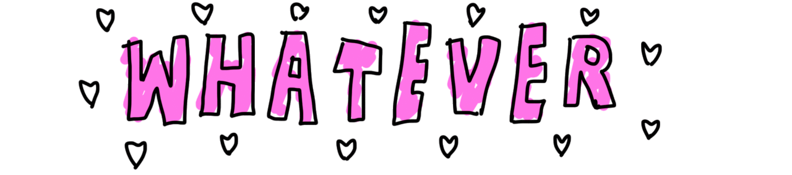
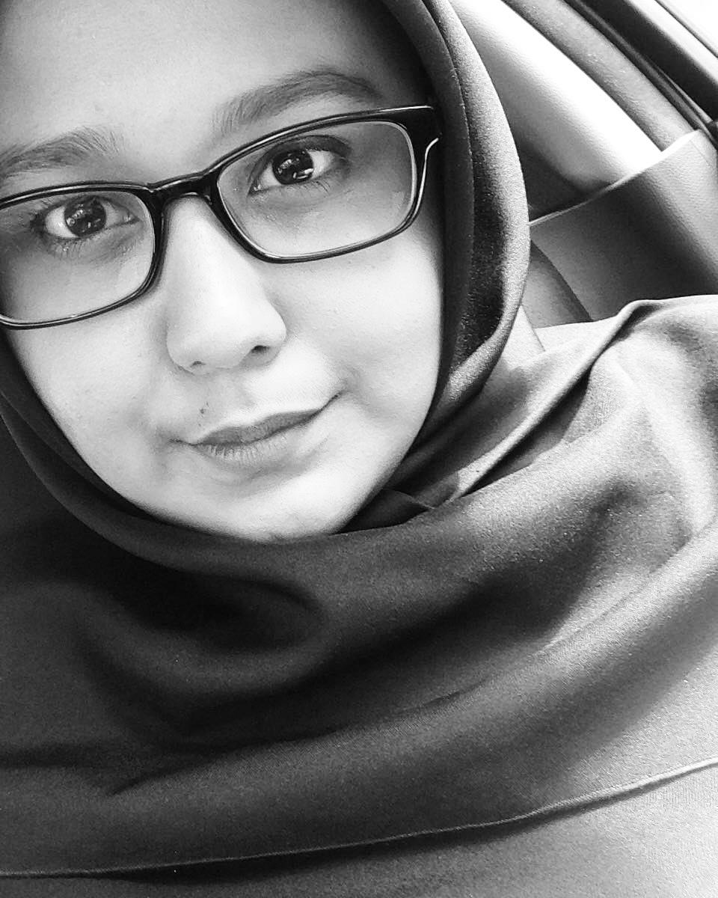
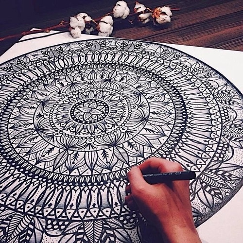
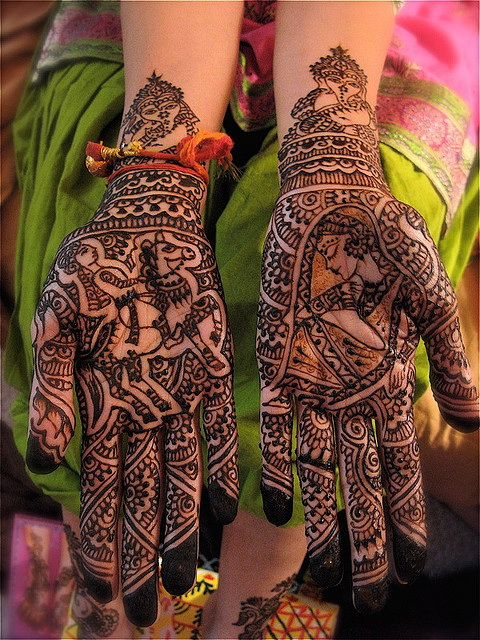
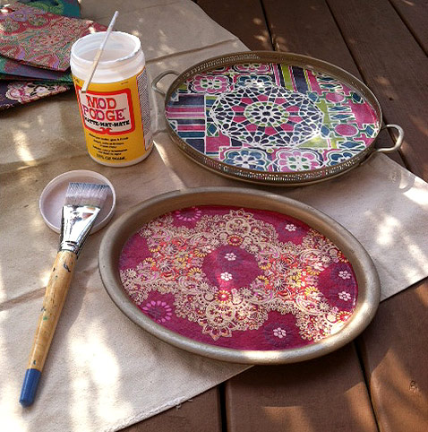
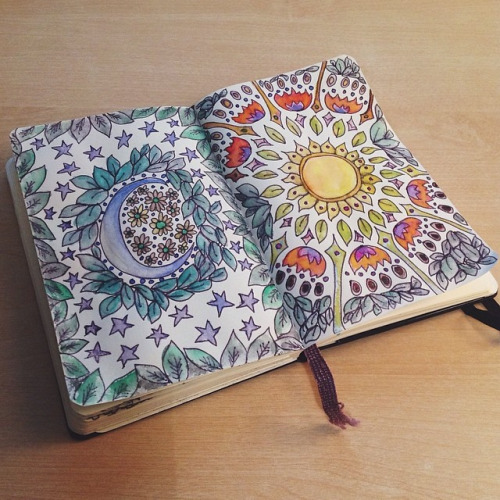

|  |
My name is Nur Solehah Izzat Ullah Sheikh. Im 21 years old. I was born on 3 May 1995 at Hospital Sultanah Nur Zahirah in Kuala Terengganu. I've two siblings which is me and my brother. I'm the elder.
I love Boho/Mandala things so much. I do love everythings bout Boho arts, from henna, Mandala patterns and many more.
I'm not into "girly" things, yaa well not all
girls like the same thing, just like not all guys like the same things.
I do love wearing lipstick, painting my nails. I mean you can be a strong
woman and feminist and still want to get cute. There's absolutely
nothing wrong with that.
|
|---|
 
 